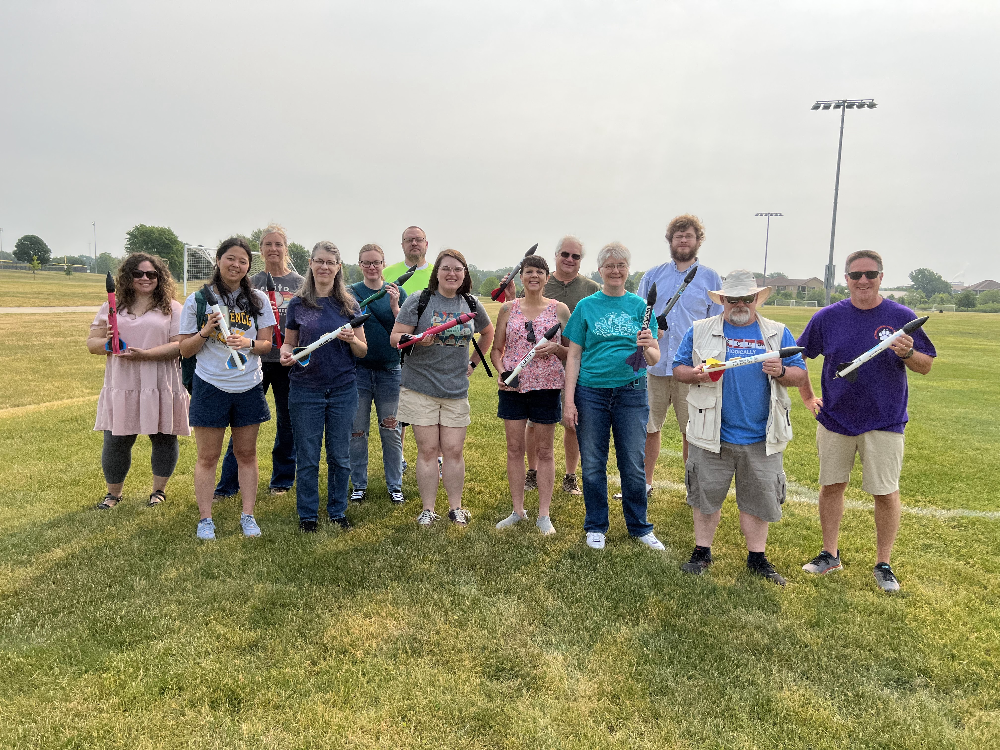
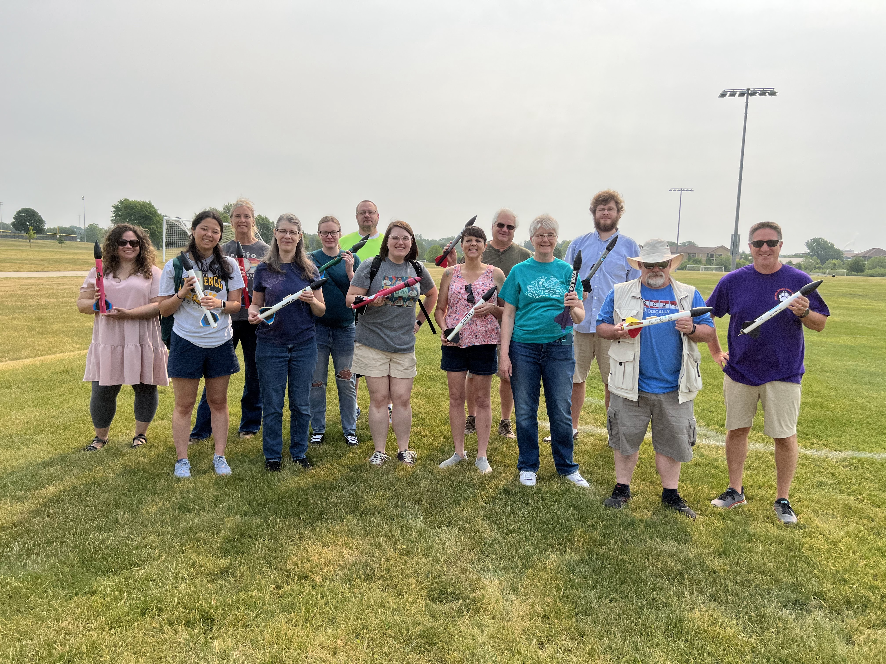
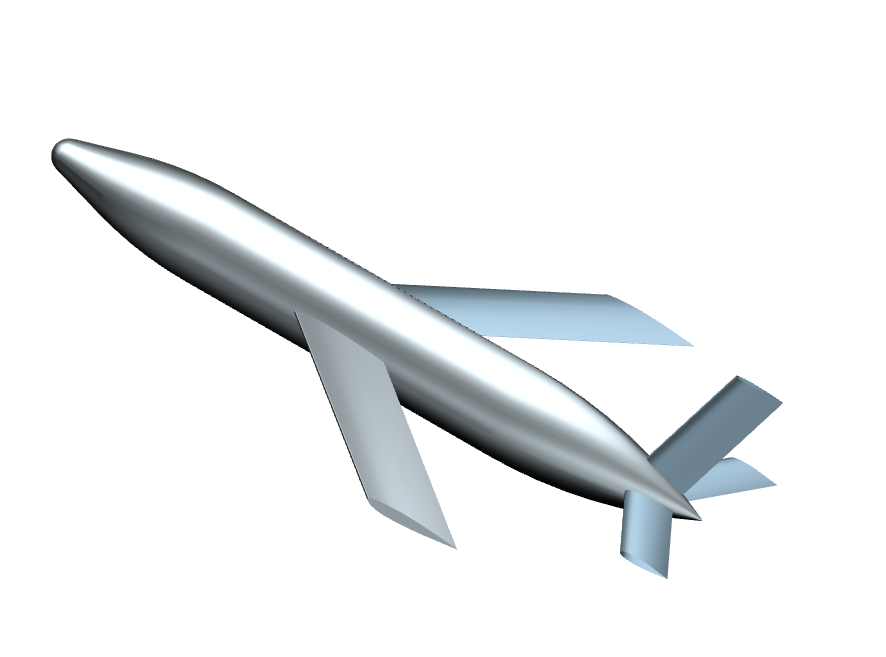
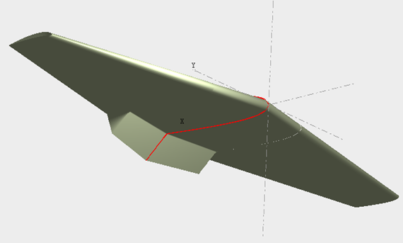
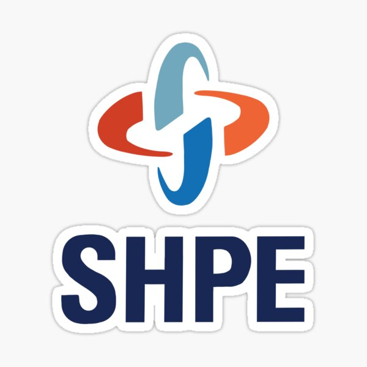
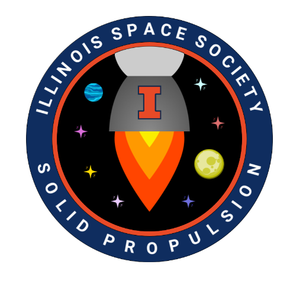

Hello, my name is Marco Antonio Soto, and I am from Des Plaines, Illinois. My passion for aerospace engineering comes from a deep curiosity about the unknown and a drive to push technological boundaries. I bring hands-on experience from a six-month internship at SpaceLab Illinois, where I developed and delivered aerospace technology lectures for educators through a program supported by the National Defense Education Program (NDEP). I led workshops on model rocketry, Arduino integration with Python, and data interpretation—translating complex aerospace concepts into accessible learning experiences. Alongside my studies, I work full-time as a Resident Advisor (RA), fostering a strong community while balancing leadership and academics. As a member of the Illinois Space Society and the Society of Hispanic Professional Engineers, I contribute to outreach initiatives that inspire future engineers. I believe in learning by doing and applying knowledge to real-world challenges. Explore my website to see more of my work and journey!
 

Developed and delivered aerospace technology lectures for educators, focusing on model rocket launches, data interpretation, and hands-on applications. Led sessions on integrating Arduino with C++ and altimeters with Python, guiding participants through step-by-step build processes, coding, and simulator data analysis.

Explore my collection of computer-aided design projects, where I design and model aerospace components with precision and functionality in mind. From 3D-printed prototypes to complex assemblies, each project showcases my engineering approach and problem-solving skills.

In this collaborative project, my team and I designed a quadcopter, using Lagrangian mechanics and rigid body dynamics to derive its equations of motion. We applied control theory to model its behavior, and focused on optimizing performance through control system design and trajectory optimization. The goal was to ensure the quadcopter could efficiently operate in real-world flight conditions while meeting performance specifications.

This report explores the application of thin airfoil theory in designing a UAV for medical deliveries, particularly in response to COVID-19, where contactless transport is critical. By examining lift slopes, flow separation, and the validity of the Kutta condition, we assess the theory’s reliability in low Reynolds number flight regimes. The findings help determine whether thin airfoil theory provides sufficient accuracy for optimizing UAV efficiency in real-world medical logistics.

I have been involved in The Society of Hispanic Engineers at UIUC since 2022, contributing to initiatives that support Hispanic students in STEM through mentorship, technical workshops, and professional development.

I have been involved in The Illinois Space Society at UIUC since 2022 as part of the solid propulsion team, contributing to the CAD-intensive development of aluminum motor casings and the design of improved rocket motor stands.